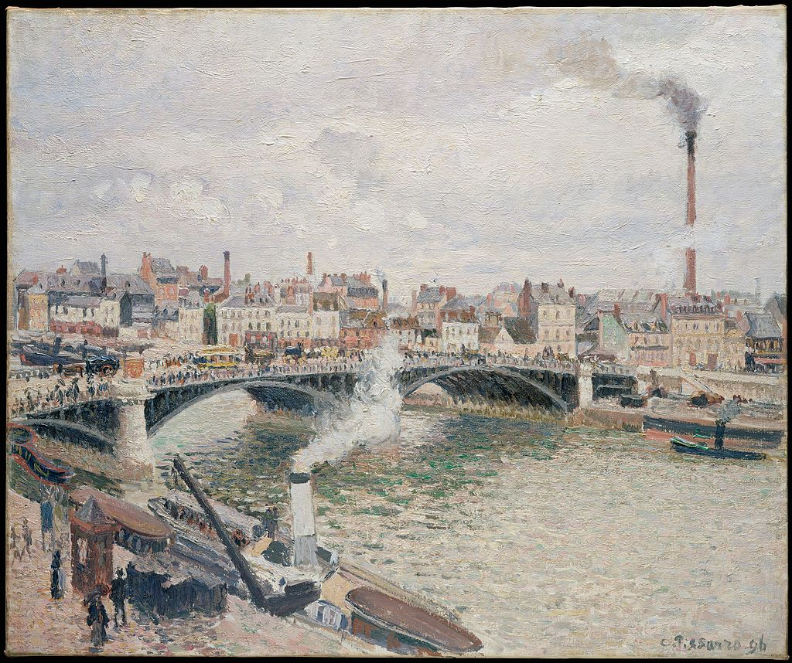

<head>
<meta charset="UTF-8" />
<meta name="keywords" content="drawing, painting" />
<meta name="description" content="drawings by Sunjy" />
<title>Sunjy</title>
<link rel="shortcut icon" type="image/x-icon" href="../../mImages/mCommon/favicon.ico" media="screen" />
<link rel="stylesheet" type="text/css" href="../../mCsses/mCommon/mCssA.css" />
<link rel="stylesheet" type="text/css" href="../../mCsses/mCommon/mCssB.css" />
<link rel="stylesheet" type="text/css" href="../../mCsses/mCommon/mCssC.css" />
<link rel="stylesheet" type="text/css" href="../../mCsses/mCommon/mCssD.css" />
<link rel="stylesheet" type="text/css" href="../../mCsses/mContent/mCssA.css" />
<link rel="stylesheet" type="text/css" href="../../mCsses/mContent/mCssB.css" />
<link rel="stylesheet" type="text/css" href="../../mCsses/mContent/mCssC.css" />
<link rel="stylesheet" type="text/css" href="../../mCsses/mContent/mCssD.css" />
</head>
<script type="text/javascript" src="../../mScripts/mContent/mContentAA.js" /></script>
<script type="text/javascript" src="../../mScripts/mContent/mContentAB.js" /></script>
<script type="text/javascript" src="../../mScripts/mContent/mContentAC.js" /></script>
<script type="text/javascript" src="../../mScripts/mContent/mContentAD.js" /></script>
<script type="text/javascript"></script> 
<script type="text/javascript">
document.write('<div class="mImgAbsolute"></div>');
/*
document.write('<p class="mFontSizeBColor" />From a white paper...</p>');
document.write('<table class="center"><tr><td>');
document.write('');
document.write('</td></tr></table>');
*/
</script>


<script type="text/javascript">
document.write('<p class="mFontSizeBColor" />Morning, An Overcast Day, Rouen</p>');
document.write('<p class="mFontSizeSColor" />“Morning, An Overcast Day, Rouen” by Camille Pissarro depicts the Boieldieu Bridge, or Grand Pont, that Pissarro painted from a room in the Hôtel d’Angleterre.<br><br>Pissarro visited Rouen in 1896 and in a letter written that year, he describes the paintings:<br><br>“The theme is the bridge near the Place de la Bourse with the effects of rain, crowds of people coming and going, smoke from the boats, quays with cranes, workers in the foreground, and all this in grey colors glistening in the rain.”<br><br>He also added:<br><br>“what particularly interests me is the motif of the iron bridge in wet weather with all the vehicles, pedestrians, workers on the embankment, boats, smoke, haze in the distance; it’s so spirited, so alive.”<br><br>Pissarro stayed at the Hôtel de Paris and the Hôtel d’Angleterre with rooms that overlooked the Seine and the bridges and a variety of views.<br></p>');
document.write('<table class="center" /><tr><td>');
document.write('<br>Pissarro visited Rouen in 1896 and in a letter written that year, he describes the paintings:<br><br>“The theme is the bridge near the Place de la Bourse with the effects of rain, crowds of people coming and going, smoke from the boats, quays with cranes, workers in the foreground, and all this in grey colors glistening in the rain.”<br><br>He also added:<br><br>“what particularly interests me is the motif of the iron bridge in wet weather with all the vehicles, pedestrians, workers on the embankment, boats, smoke, haze in the distance; it’s so spirited, so alive.”<br><br>Pissarro stayed at the Hôtel de Paris and the Hôtel d’Angleterre with rooms that overlooked the Seine and the bridges and a variety of views.<br>" />');
document.write('</td></tr></table>');
</script>


